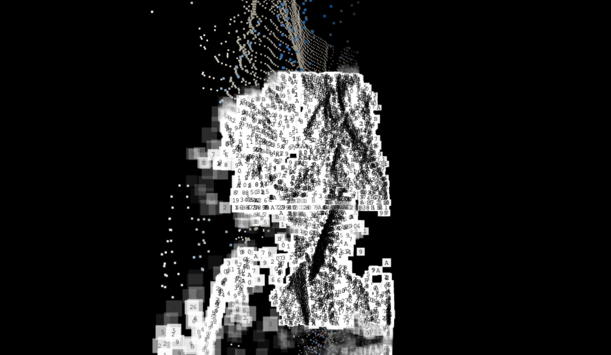
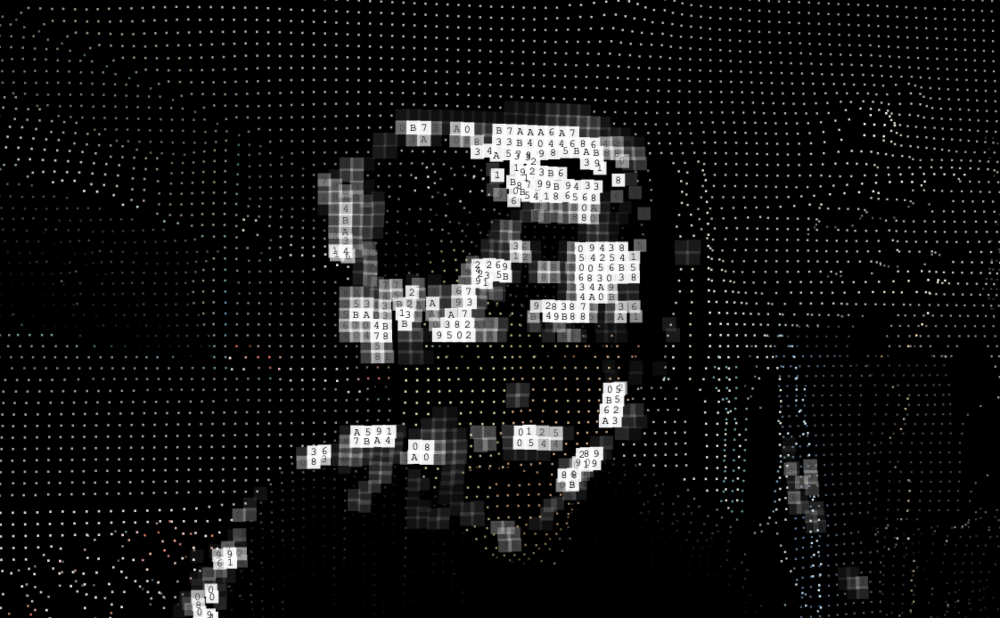
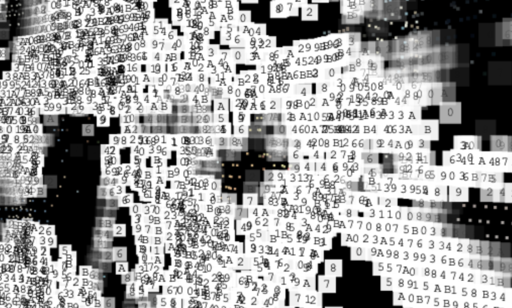
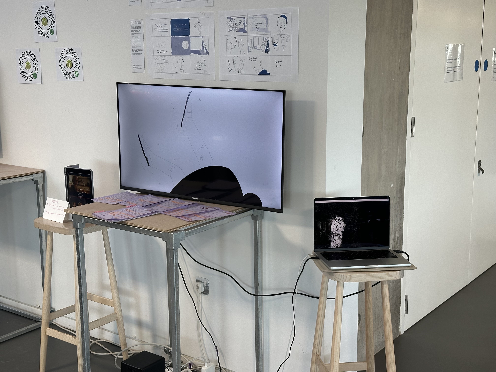
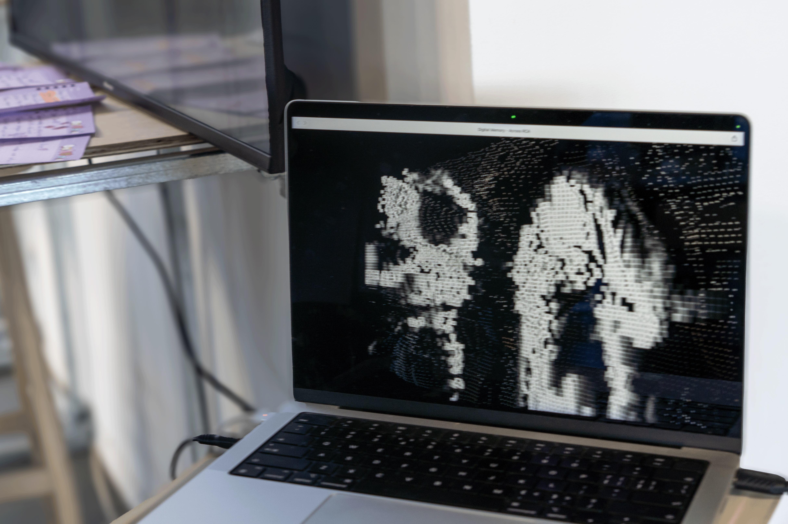
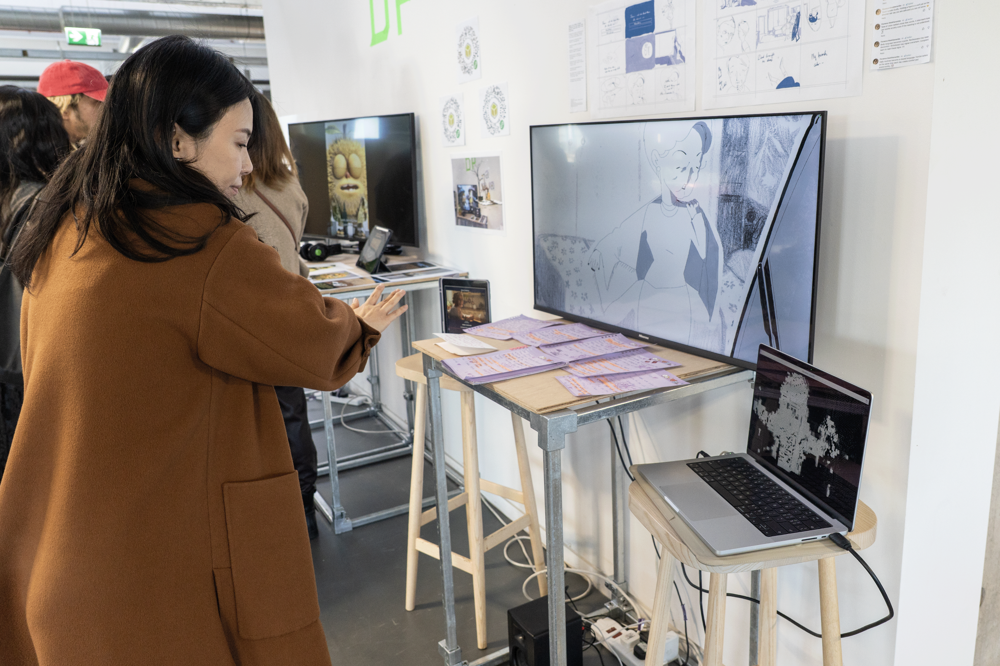
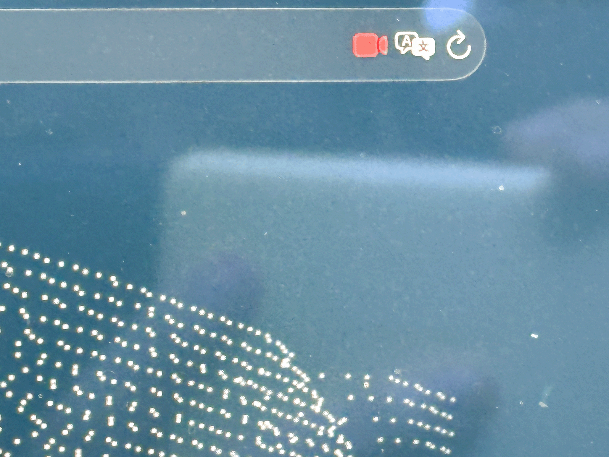

Virtual Interactive Art
Digital Media Ontology Series
Attributes Research
Producer: Yi Huang
Content: Based on the characteristics of digital memory, I explored the attribute characteristics of digital image storage itself, in the process of digital entropy, digital images as data have to lose themselves in the transmission process, even if they are repaired, they are no longer the original flavor, which is extremely similar to the current human perception of memory.
Technical Logic：I. Starting Point: Digital images are never ‘true’ copies
Digital images begin to lose fidelity the moment they are stored.
This work uses a camera to take a photograph of you every 30 seconds, but by the moment the
image is captured, it has already undergone a triple ‘forgetfulness’:
Lossy compression: doCamCapture exports JPEG files (quality 0.88), not raw data. The first loss of
information occurs at the very moment of capture.
Downsampling: The original camera resolution is 640×360, but the point cloud uses only 128×72—
9,216 sample points. A vast amount of spatial detail is discarded during quantisation.
Compression of the colour dimension: When constructing the point cloud, the three RGB channels
are collapsed into a single luminance value, used to drive the Z-axis (depth). The richness of the
colours themselves is exchanged for a single dimension in space—information conservation is not
achieved, and the information is distorted.
This corresponds to the ‘encoding loss’ in human memory—the moment an event enters memory, it
is no longer the event itself, but rather the part that the brain has chosen to retain.
II. Entropy Gain During Transmission: Existence Itself Leads to Corrosion
The core contradiction of the work lies here:
When you stand in front of the camera, your motion heatmap corrodes your own image.
The technical process is as follows:
The sensor (64×36) calculates frame-to-frame differences every 5 frames, generating a motion
heatmap.
In areas where your body moves, the corresponding points on the point cloud begin to accumulate a
corrosion value, ptC.
Once the corrosion value exceeds the threshold, that point transforms from a coloured square into a
white noise block, overlaid with randomly flickering base-12 characters (0–9AB).
When you stop moving, the erosion value decays slowly (× 0.965), and the point cloud gradually
‘recover’s’
This corresponds to the fact that memory, in the process of being ‘used’ (recalling, recounting,
repeatedly revisiting), actually accelerates its distortion. Every retrieval is a re-encoding,
introducing new errors. ‘You think you are remembering it, but you are actually rewriting it.’
III. After Repair, It Is No Longer the Original
Following corrosion and degradation, the dots return to their coloured state—appearing to have
been restored.
However, there is one crucial detail: the base-12 characters that fluctuated randomly during the
corrosion process are, technically speaking, randomly regenerated (ptI[i] =
Math.floor(Math.random() * 12)), rather than recovered from the original image data. The ‘original
information’ that once resided in that character slot is now irretrievable.
This is precisely where digital entropy is at its most cruel—repair and restoration are two distinct
matters. Repair involves filling gaps with new data, rather than retrieving what has been lost. It is
akin to how humans ‘fill in the blanks’ of damaged memories; often, the brain reconstructs the
content using logic and emotional biases, rather than recalling what actually happened.
IV. The 30-second overwrite cycle: the layering and overwriting of memory
Every 30 seconds, the camera captures a new image and the entire point cloud is reconstructed—the
data of the previous ‘you’ is overwritten.
This overwriting is not a gradual process, but a replacement. The new point cloud does not sit on
top of the old one, but directly replaces it. The previous state vanishes without a trace.
This is analogous to the ‘interference effect’ in human memory—new experiences overwrite old
ones, particularly similar ones. That afternoon you thought you remembered so clearly may well
have been quietly overwritten long ago by countless similar afternoons that followed.
V. The Choice of Base-12 Characters
The corrupted state displays not random gibberish, but the base-12 (duodecimal) character set: 0 1 2
3 4 5 6 7 8 9 A B.
This choice is significant: it is neither text that humans can read directly, nor completely
meaningless noise—it is a machine language, yet one that humans can barely make out. It occupies
a liminal space between ‘readable’ and ‘unreadable’, much like fragments of memory: you know
what they are, yet cannot fully reconstruct their meaning.
The central proposition of the entire work is this: digital images and human memory share the same
fate—neither is a faithful record of reality, but rather a stream of data constantly drifting through
transmission, compression, corruption, overwriting and error correction.

虚拟交互艺术
数字媒介本体系列分章
属性研究
制作人：黄熠
基于数字记忆的特性与团队合作精神，我决定探索数字图像存储自身的属性：在数字熵的推进中，图像一旦成为数据，便不得不在传输的途中不断丢失自身；即使被修复、被补全，也已不是最初的那一口“原味”。而这一切，竟与当下人类对记忆的感知如此相似——记忆同样在流转中磨损，在重述里变形，最后只留下一个更像“现在”的版本。






自检：这是在AcrossRCA的合作，实话说过程十分艰辛，我的组员她们不知道Digital Being这个主题下需要产出些什么，也不知道合作本身究竟意味着什么，偏要选择阿尔兹海默症记忆相关的以设计逻辑为指向的主题与方法，用二维纯手绘的形式，我又有什么可说呢？也是因为这次合作，我才更深入了解这个浮躁的英国艺术教育市场。
Self Reflection:
© 2026 All Rights Reserved.